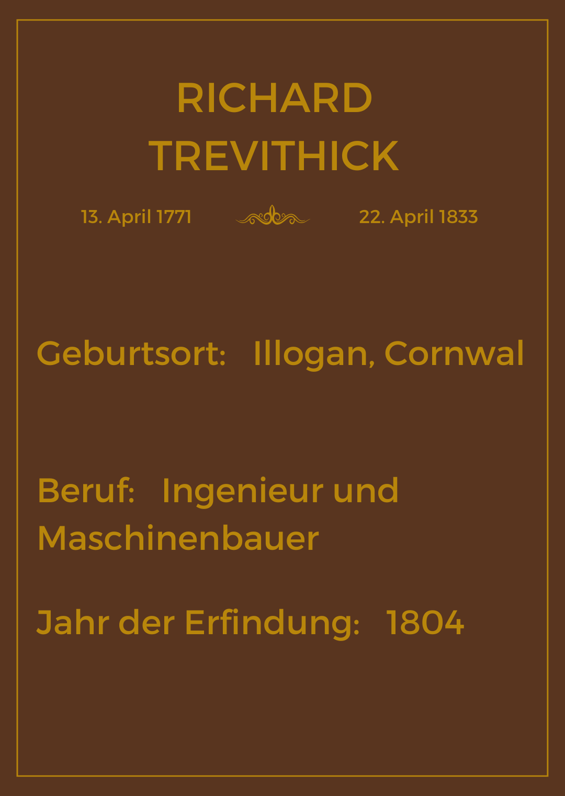

Dampfeisenbahn
Die Dampfeisenbahn wurde im 19. Jahrhundert erfunden und gilt als eine der wichtigsten Errungenschaften der Menschheit. Die Geschichte der Eisenbahn begann allerdings bereits früher, und zwar mit der Erfindung der Dampfmaschine und der Entwicklung von Schienenfahrzeugen allgemein.
Es gibt viele Erfinder, die zur Entwicklung der Eisenbahn beitrugen. Die ersten Schienenbahnen gab es bereits im Mittelalter, wobei diese noch aus Holz bestanden, und für kleine Wagen gemacht wurden, etwa damit Bergleute die gewonnene Kohle befördern konnten. Zudem entstanden im 16. Jahrhundert die ersten Schienenbahnen für den Transport außerhalb der Bergwerke. Diese Bahnen wurden von Pferden gezogen und hatten den Vorteil, dass ein Pferd etwa 30-mal so viel ziehen konnte wie vorher auf dem Rücken.
Die Dampfeisenbahn wurde von dem englischen Ingenieur Richard Trevithick

erfunden, welcher auch heute noch als einer der Väter der Eisenbahn angesehen wird. Im Jahr 1804 baute er die erste funktionsfähige Dampflokomotive. Diese fuhr auf einer Schiene und war in der Lage eine Last von 10 Tonnen zu befördern. Dabei erreichte die Dampflok eine Geschwindigkeit von acht Km/h.
Allerdings fand Trevithick keinen Käufer für seine Erfindung. Und auch nach zahlreichen Verbesserungen hatte er vier Jahre später kein Glück und es gab kaum Interesse an seiner Erfindung, weshalb er nach einigen Jahren aufgab. Ein Grund dafür war sicherlich auch, dass die Eisenschienen das Gewicht der Dampflok auf Dauer nicht aushielten und brachen.
Er war seiner Zeit voraus, denn erst 1825 wurden das erste Mal Personen mit der Dampfeisenbahn von Stockton nach Darlington transportiert. Es war die erste Bahnstrecke für den öffentlichen Personenverkehr und wurde von Georg Stephenson gebaut.
Zu Lebzeiten bekam Trevithick kaum Anerkennung für seine Arbeit und er starb in Armut. Heute zählt er jedoch zu den größten Erfindern und Ingenieuren seiner Zeit und er legte den Grundstein für die industrielle Revolution und seine Ideen sind auch heute noch von großer Bedeutung.
Fahrrad
Vor der Erfindung der Eisenbahn und des Fahrrads wurden Lebensmittel größtenteils mit Pferden transportiert. Allerdings gab es In den Jahren 1812-1817 in ganz Europa schlechte Ernten. Grund dafür waren die Napoleonischen Kriege. Insbesondere in Deutschland haben die Napoleonischen Armeen die Weizen und Hafervorräte verbraucht, was zur Folge hatte, dass der Transport mit Pferden erheblich teurer wurde. Der Bedarf an pferdelosen Transportmitteln war dementsprechend groß.
Doch der 28-jährigeBaron Karl von Drais entwarf eine Lösung für das Problem. Er erfand zwei unterschiedliche Fahrmaschinen: Eins hatte ein Laufrad (Tretmühle) und Zwei hatte eine geschmiedete Kurbelwelle, die es dem Fahrer ermöglichte, nach vorne gewandt zu sitzen. Als Drais den Fürsten auf dem Wiener Kongress seine Erfindung präsentierte, zeigten sie jedoch kein Interesse an seiner Erfindung, da seine Fahrmaschine auf schlechten Straßen und in den Bergen sehr müde machte.
Nach dem Kongress entschied Drais, das Abstoßen vom Boden auszuprobieren und erfand das Zweirad dann schließlich im Jahre 1817. Das Zweirad wurde später als Laufrad bezeichnet und sah dem Fahrrad, welches wir heute kennen zwar schon ähnlich, allerdings mit der Besonderheit, dass es keine Pedalkurbeln gab und man sich stattdessen mit den Füßen vom Boden abstoßen musste. Das Balancieren auf nur 2 statt 4 Rädern war für die Menschen damals aber ohnehin befremdlich und so war es gut, dass die Füße einen zusätzlichen Halt gaben.
Das Laufrad von Drais wog etwa 20Kg und konnte bis zu 22Km/h schnell fahren. Im Jahr 1817 gab es bereits 5.000-10.000 dieser Laufräder. Drais‘ Erfindung fang auch schnell Anklang in der gesamten westlichen Welt und wurde in allen möglichen Ländern weiterentwickelt. Das Zweirad hat damals jedoch acht bis zehn Pfund gekostet was in der heutigen Zeit wohl 590-740 Pfund entsprachen. Für die Arbeiterklasse war das kaum bezahlbar, weshalb unter anderem in England das Zweirad zum Statusmodell vieler Adeliger wurde.
Es gibt einige Quellen, die behaupten, dass das Fahrrad erst mit anbringen der Pedalkurbeln im Jahr 1966 erfunden wurde und das Laufrad lediglich ein Vorgänger des Fahrrads war. Pedalkurbeln gab es aber schon deutlich vor der Erfindung des Zweirads und wurden von Drais bereits in seiner Fahrmaschine für 4 Räder verwendet. Abgesehen von den Pedalkurbeln gibt es daher so gut wie keine Unterschiede zu dem Fahrrad, welches wir heute kennen. Aufgrund dessen gilt Drais heute als der wahre Erfinder des Fahrrads.